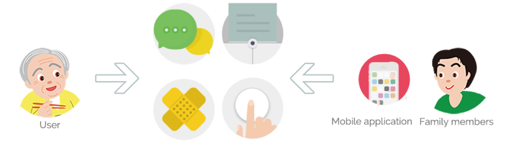
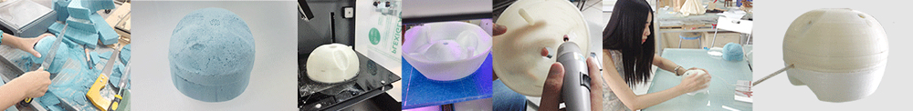
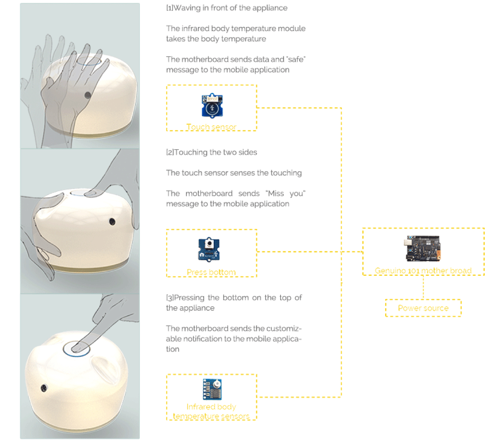
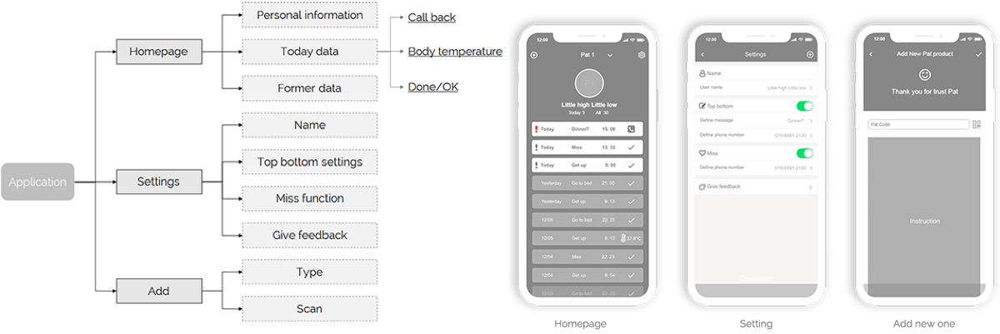
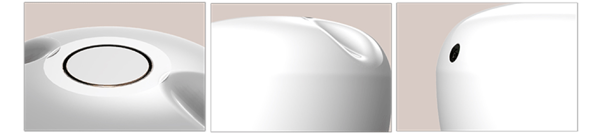

Overview
Pat is an appliance combined with a mobile application which could provide a measurement of body temperature and data transferring, interaction and user-defined function bottom for the users.
Discover
Problem Background

There are millions of empty nesters in China now, especially in the second and third class city. The pressure of the middle generation in China is extremely heavy.
Pain Points
1. Detached relationship because of distance
China is big and most of the good work opportunities are scattered in big cities like Beijing, Shanghai, and Guangdong. Commonly, these younger generations contact their parents remotely by phone call, video call, Wechat or message. And most of the parents are unwilling to proactively communicate with their children in order to reduce the concerns in their children's life.
2. Living alone
Chinese seniors think living in professional nursing homes is a shame since it means their children don't want to support and live with them and it's not consistent with the Chinese traditional virtue. They'd rather chose to live alone or hire a maid to help them which is not affordable for most families.
3. The typical family format - Chinese family 4,2,2
Because of policy changes from having one kid to two kids, the stress for the middle generations is extremely high. The seniors are retired and expect to live with their only kid, who is single or raising their own kids now. The middle generations are forced to choose one thing to invest, like personal development or kid's education. Unfortunately, parent's living situations are not the first prioritized thing.
Interactions
The goal of this system is to connect the parent's end with the kids' end in a seamless way.
There are 3 functions Pat could do.
1. Pre-set a message and send it by pressing a button
2. Send a missing message to kids end
3. Report emergent situation to kids end
Sketchings and Prototyping
The form design goal is to create a companion home electronics that is close, friendly and credible.
Technical Plan
IA and Mockups
Pat IoT system also provides a mobile app for the children to support software interactions and call back home immediately after receiving the emergent message.


Design Details
Designed and coded by Faye Yifei Gong | All Rights Reserved | @fayegong.xyz© 2016-2019